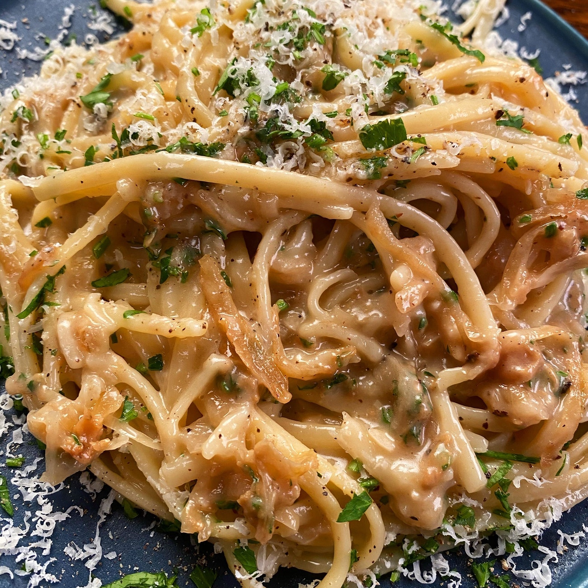

Caramelized Onion Pasta
This hearty pasta dish is easy to make, as it uses a storebought vodka sauce as its base. It requires only three ingredients outside the jar of pasta sauce and the pasta itself.
Ingredients:
- One Large Yellow Onion
- Two Medium Vine Tomatoes
- One Teaspoon Butter
- One Jar Bertolli Pasta Sauce
- Linguine, Spaghetti, or Other Pasta, as Preferred